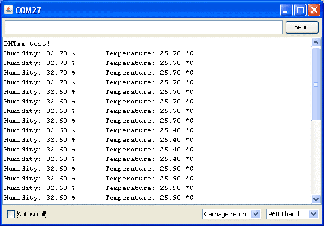
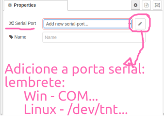
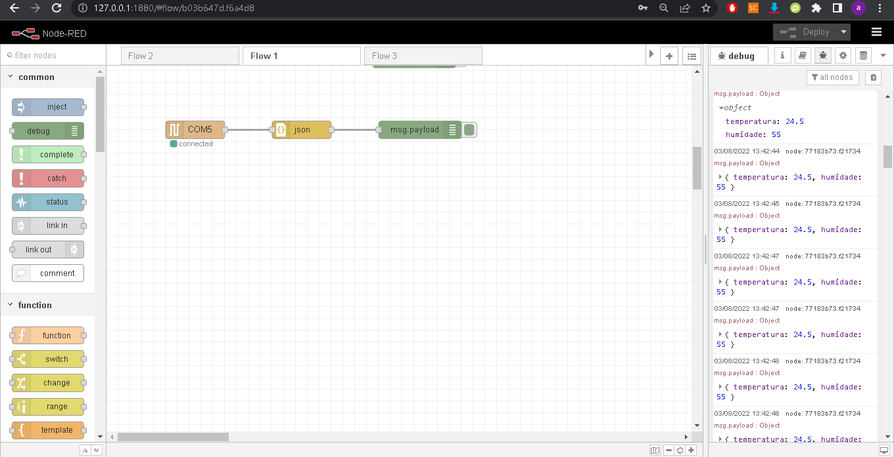
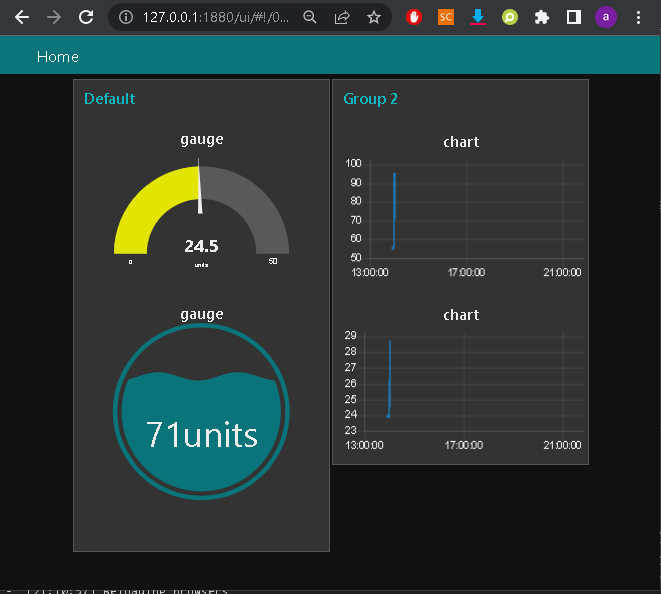

Lab07
Lab6 - Desafios¶
Os desafios 1, 2 e 3 devem ser entregues e compõem parte da nota do CP6.
Conteúdo deste laboratório¶
-
Instalação e uso de bibliotecas externas para arduino
- Arduino JSON
- Sensor de temperatura e umidade DHT11
-
Comunicação serial entre Arduino e o Node-RED
- Como mandar dados do arduino para o node-RED no formato JSON
-
Como desenvolver um sistema supervisório para monitoramento de temperatura e umidade
Instalação e uso de bibliotecas externas para arduino¶
Normalmente os criadores das bibliotecas descrevem o passo-a-passo para utilizar as bibliotecas criadas, mas de forma geral podemos instalar uma biblioteca externa de duas formas:
-
Por Download:
- Fazer o download do arquivo .zip da biblioteca
- Descompactar o arquivo dentro da pasta ~/Arduino/libraries/
- Pronto! Podemos usar em nosso projeto.
- De forma geral é isso, eventualmente o criador da biblioteca irá orientar eventuais etapas adicionais.
-
Pelo gerenciador de bibliotecas:
- abra o Arduino IDE
- acesse: Sketch ==> Include Library ==> Manage Libraries…
- Digite na busca o nome da biblioteca
- Encontre a opção desejada e clique em instalar
- Pronto! Podemos usar em nosso projeto.
- Algumas libs dependem de outras de outras libs, nesse caso é necessário instalar todas as libs.
Imagem passo-a-passo

DICA: Explore a documentação e os exemplos da biblioteca instalada.
Biblioteca ArduinoJson¶
A biblioteca ArduinoJSON é escrita em C++ para realizar a comunicação de dados no formato JSON (JavaScript Object Notation) com aplicações para IoT. Pra quem conhece Python a estrutura é muito parecida com a de dicionários:
{"Key1":"Value1", "Key2":"Value2", "Key3":"Value3","....":."...."}
Documentação oficial em: arduinoJSON - https://arduinojson.org/
Exercise
Faça a instalação da biblioteca arduinoJSON direto pelo ArduinoIDE, no campo de busca digite ArduinoJson e instale a biblioteca. Para mais detalhes de como realizar a instalação acesse aqui a documentação oficial - https://arduinojson.org/v6/doc/installation/
Sensor DHT11¶
O DHT11 é um sensor digital de temperatura e umidade muito utilizado em diversas aplicações. Para facilitar o trabalho utilizamos uma biblioteca para realizar as leituras de temperatura e umidade.

| Pino | Descrição |
|---|---|
| 1 | Alimentação, VCC, 3,5V ~ 5,5V |
| 2 | DATA, transmissão de dados |
| 3 | NC, Não Conectado |
| 4 | Alimentação, GND, 0v |
Cuidado para não inverter os pinos de alimentação.
Exercise
Faça a instalação das bibliotecas para usar o DHT11: Adafruit Unified Sensor Libs:
Após o download descompacte o arquivo .zip e mova-o para a pasta ~/Arduino/Libraries/
Testando o sensor DHT11¶
Para testar o funcionamento do sensor vamos executar 2 etapas: Montagem do hardware e Desenvolvimento do Software.
O hardware de teste¶
Monte o circuito da imagem abaixo e não esqueça de conectar o resistor

Exercise
De acordo com o circuito qual o pino do arduino é utilizado para realizar comunicação digital com o sensor DHT11?
O código de teste¶
Crie um novo projeto no ArduinoIDE e tilize o código de teste abaixo: Este código foi adaptado do site filipeflop
/*
Código para teste do sensor DHT11
*/
#include "DHT.h"
#define DHTPIN 7 //define o pino usado no arduino
#define DHTTYPE DHT11
DHT dht(DHTPIN, DHTTYPE); //declara a objeto da classe
void setup()
{
Serial.begin(9600);
Serial.println("DHTxx test!");
dht.begin();
}
void loop()
{
float h = dht.readHumidity(); // faz leitura da umidade
float t = dht.readTemperature(); // faz leitura da temperatura
// testa se retorno é valido, caso contrário algo está errado.
if (isnan(t) || isnan(h))
{
Serial.println("Falha na leitura do sensor DHT");
}
else
{
Serial.print("Umidade: ");
Serial.print(h);
Serial.print(" %t");
Serial.print("Temperatura: ");
Serial.print(t);
Serial.println(" *C");
}
delay(500); //delay de 0,5s
}
O teste¶
Após montar o circuito e escrever o código, carregue o código no arduino e abra o Monitor Serial para visualizar o funcionamento com mas medidas da temperatura e umidade, o resultado esperado deve ser igual da imagem abaixo.

Parabéns!! Primeira parte concluida, vamos em frente...
Usando a biblioteca ArduinoJson¶
Vamos alterar nosso código para enviar as informações do sensor DHT11 em formato JSON, observe o código abaixo com as alterações:
/*
Código exemplo demonstrando o funcionamento do Sensor DHT11 enviando
informações via serial no formato JSON para o servidor node-Red que recebe e transmite via protocolo MQTT
*/
/////Json
#include <ArduinoJson.h>
const int TAMANHO = 50; //define o tamanho do buffer para o json
///// Sensor DHT
#include "DHT.h"
#define DHTPIN 7 //define o pino usado no arduino
#define DHTTYPE DHT11
DHT dht(DHTPIN, DHTTYPE); //declara a objeto da classe
////// Outras declarações
#define led 13 //define led conectado no pino 13
void setup()
{
//inicialia c sensor
dht.begin();
//inicializa comunicação serial
Serial.begin(9600);
//configura pinos de saida do arduinos
pinMode(led, OUTPUT);
}
void loop()
{
StaticJsonDocument<TAMANHO> json; //Aloca buffer para objeto json
// Faz a leitura da temperatura
float temp = dht.readTemperature();
// faz a leitura da humidade
float umi = dht.readHumidity();
//formato de escrita do json
json["temperatura"] = temp;
json["umidade"] = umi;
serializeJson(json, Serial);
Serial.println();
//delay
delay(500);
}
Um ponto importante: Definir a variavel TAMANHO que serve como buffer em bytes para alocar o JSON que vamos trabalhar. Para isso podemos utilizar o ArduinoJson Assistant neste link: https://arduinojson.org/v6/assistant/#/step1, siga o passo-a-passo da ferramenta para descobrir o valor minimo que devemos utilizar.
Exercise
Utilizando o ArduinoJson Assistant qual o valor recomendado para o json do exemplo abaixo?
{
"valorSensor1":10.10258,
"valorSensor2":50.28546
}
Etapa 2 concluida! Agora o nosso programa envia dados no formato Json, facilitando a integração com outros sistemas incluindo o Node-RED.
Comunicação serial com node-RED¶
No flow do node-red, vamos usar o node serialport para realizar a comunicação serial entre o node-red e o arduino conectado na porta que conectado na porta USB, por padrão esse não vem instalado. Faça a instalação do node node-red-node-serialport.

No node-RED monte o flow:

Agora configure o node da serial da seguinte forma:
- Serial Port: com o nome da porta COM que está alocada para o arduino
- baud rate: para 9600.

Faça o deplay e se tudo estiver correto, no debug vai aparecer as mensagens recebidas pelo arduino.

Desenvolvimento de um sistema supervisório para monitoramento de temperatura e umidade¶
Para o desenvolvimento do sistema de supervisório ficar completo basta adaptar o fluxo que temos no node-RED para receber os tópicos de temperatura e umidade separados e enviar para o dashboard.
Exercise
Faça as adaptações necessárias para exibir os valores de temperatura e umidade em 2 gauge e 2 chart como na imagem abaixo:

Exercise
Baseado na solução do desafio anterior, altere o fluxo para enviar os dados do node-RED via protocolo MQTT. Agora em um segundo computador crie um fluxo no node-RED que recebe os topicos enviados pelo primeiro flow em MQTT.
Controlando o arduino pelo node-RED¶
Chegou a hora de fazer o caminho de volta, ja mandamos dados para o node-RED, agora é vez de receber dados do node-RED.
Exercise
Adicione um dashboard switch e configure para enviar a string “liga” e “desliga” pela serial, para controlar um LED do arduino.
DICA: Veja o exemplo abaixo como referência.
#include <ArduinoJson.h>
const int LED = 3;
const int TAMANHO = 200;
void setup() {
Serial.begin(9600);
//O valor padrão de 1000ms é muito tempo
Serial.setTimeout(10);
pinMode(LED,OUTPUT);
}
void loop() {
if (Serial.available() > 0) {
//Lê o JSON disponível na porta serial:
StaticJsonDocument<TAMANHO> json;
deserializeJson(json, Serial);
if(json.containsKey("led")) {
int valor = json["led"];
analogWrite(LED, valor);
}
}
delay(300);
}
Desafios¶
Já construimos toda a infraestrutura com a base necessária para desenvolver os desafios deste lab.
Desafio 1: Alerta de Condições Climáticas¶
Objetivo: Criar um sistema de alerta que notifica o usuário quando a temperatura e/ou umidade ultrapassam um limite definido.
Instruções:¶
- Utilize o Node-RED para definir limites de temperatura e umidade (por exemplo, temperatura acima de 30°C e umidade abaixo de 40%).
- Quando os valores lidos pelo sensor DHT11 ultrapassarem esses limites, um alerta deve ser exibido no dashboard.
- Adicione um LED no Arduino para acender quando os limites forem ultrapassados.
Desafio 2: Registro de Dados¶
Objetivo: Armazenar os dados de temperatura e umidade em um banco de dados ou arquivo para análise posterior.
Instruções:¶
- Utilize o Node-RED para encaminhar os dados recebidos do Arduino para um banco de dados de sua escolha (pode ser um banco de dados SQL, NoSQL ou até mesmo um arquivo CSV).
Desafio 3: Integração com Outros Sensores¶
Objetivo: Integrar outros sensores ao sistema e exibir seus dados no Node-RED.
Instruções:¶
- Escolha um ou mais sensores adicionais compatíveis com Arduino (por exemplo, sensor de luminosidade, sensor de movimento, sensor de gás, etc.).
- Integre o(s) sensor(es) escolhido(s) ao seu circuito Arduino.
- Modifique o código do Arduino para ler os dados do(s) novo(s) sensor(es) e enviar esses dados para o Node-RED em formato JSON, juntamente com os dados de temperatura e umidade.
- No Node-RED, configure o dashboard para exibir os dados do(s) novo(s) sensor(es) em tempo real, seja através de gráficos, medidores ou outros widgets relevantes.
Como um desafio adicional configurar alertas ou ações específicas com base nos dados do(s) novo(s) sensor(es). Por exemplo, se um sensor de luminosidade detectar que está escuro, um LED pode ser acionado automaticamente.